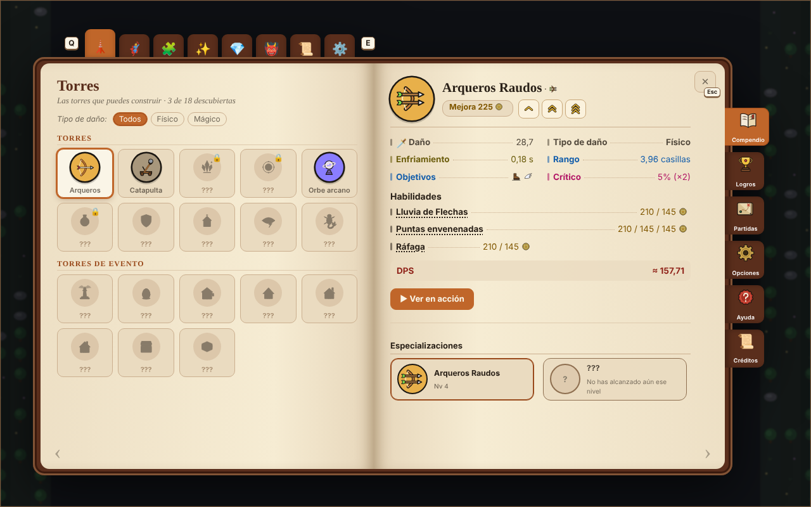

Funciona como el «atrás» del navegador: vuelve a la última página que viste (otra sección, otra torre, Nv o especialización). En PC, también con la tecla Retroceso. Recortes de la página derecha del compendio, con el botón nuevo marcado en azul.

Un botón redondo igual que la ✕, a su izquierda. Siempre en el mismo sitio en cualquier página. Mi favorito: está donde ya va la mano para cerrar y no mueve nada de la ficha.
Dice a dónde vuelves («↩ Arqueros», «↩ Anillo de vida»…). Más claro, pero ocupa una línea encima de la ficha (en el juego la ficha bajaría para dejarle sitio; aquí está encima solo por ser un boceto).
Solo para este caso (estás en una especialización y quieres volver a la torre). No sirve para volver entre secciones.